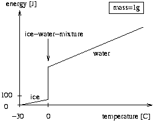

Home Page
F.A.Qs
Statistical Charts
Past Contests
Scheduled Contests
Award Contest
| Online Judge | Problem Set | Authors | Online Contests | User | ||||||
|---|---|---|---|---|---|---|---|---|---|---|
| Web Board Home Page F.A.Qs Statistical Charts | Current Contest Past Contests Scheduled Contests Award Contest | |||||||||
|
Language: Drink, on Ice
Description A good drink is always served on ice. That said, the amount of ice is what makes the difference. If it is too much, the drink will be well cooled, however, this is a bit of fraud as there could be less ice (and more Vodka for example). On the other hand, if there is too little ice the drink is warm which is unacceptable. You are to help the bartender, of course neither with mixing nor drinking, but with calculating the expected outcome of such mixtures.
To make things easier, we assume that pure water is mixed with ice in a closed system, i.e., there is no problem with the outside temperature or the warming of the bottle, etc. Therefore, after a some time has passed, the system may be regarded as balanced (there is no further change in temperature and no more melting or freezing). Your job is to calculate the final temperature of this balanced system and the amount of ice and water in this equilibrium state. As you know from physics, it takes 4.19 Joule to heat one gram of water one Kelvin, whereas it takes 2.09 Joule if it is ice. We define the capacities cw = 4.19 J/(g*K) and ci = 2.09 J/(g*K). Melting one gram of ice takes 335 Joule, where the temperature remains constant at zero. We define the constant em = 335 J/g. The total thermal energy of the ice and the water before the experiment is equal to the thermal energy of the final mixture. The figure below shows the energy of one gram of ice, ice-water-mixture, or water, where the temperature is measured relative to -30 degrees Celsius. The jump at 0 degrees represents the melting of ice to water. The amount of energy gained is proportional to the amount of ice already melted. Input The input contains several test cases. Each test case consists of four real numbers mw, mi, tw, ti. The mass of water mw and the mass of ice mi are both non-negative, given in grams, and mw + mi > 0. The water temperature tw and the ice temperature ti follow, both given in degrees Celsius, and you may assume that -30 < ti <= 0 <= tw < 100. The last test case is followed by four zeroes. Output For each test case output the amount of ice and water in grams and the final temperature of the mixture in degrees Celsius. All numbers must be rounded to one digit. Adhere to the sample output for the exact format to use. Sample Input 100 20 50 -10 100 22 0 0 100 35 25 -10.5 10 90 25 -28 0 0 0 0 Sample Output 0.0 g of ice and 120.0 g of water at 27.5 C 22.0 g of ice and 100.0 g of water at 0.0 C 6.0 g of ice and 129.0 g of water at 0.0 C 100.0 g of ice and 0.0 g of water at -4.2 C Source |
[Submit] [Go Back] [Status] [Discuss]
All Rights Reserved 2003-2013 Ying Fuchen,Xu Pengcheng,Xie Di
Any problem, Please Contact Administrator